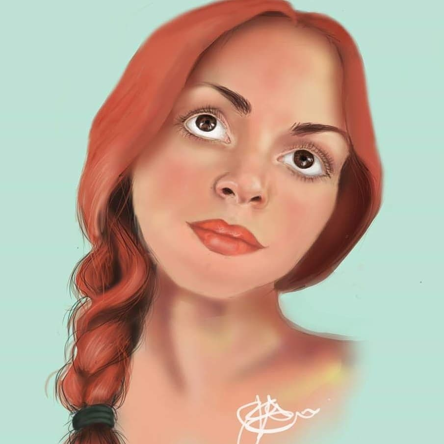

ABOUT ME
"Working from reference photographs, I create bespoke portraits in a range of both traditional and digital mediums. With every artwork, my intention is always to capture the personality and essence of the subject; I love being able to capture that unique "spark" to create meaningful and timeless gifts perfect for any occasion." - Jade Evans -



I am a UK-based artist, originally from Gloucester now living in Cheltenham with my husband and two young daughters, Grace & Isla. I have always loved drawing and painting—some of my earliest memories are being mesmerized by my mum copying the covers of VHS Disney movies and winning a school drawing competition with my depiction of Simba, which made it into the school newspaper. I was so proud! Drawing has always been a passion of mine, both inside and outside of school, and over time it became an important means of expression throughout my teenage years. I fondly remember participating in a local annual art exhibition, and the thrill of selling my very first piece—a deeply personal work that resonated with someone else—was unforgettable. It was inevitable that I would pursue art academically. I gained my foundation in Art & Design at Pittville Gardens, University of Gloucestershire, and later studied Fine Art at Cardiff. Some of my happiest memories come from hours spent in galleries, creating paintings, enjoying the smell of oil paints, and discussing ideas with like-minded classmates. During my degree, I honed in on painting, particularly oil painting, as my specialization. My style is somewhat distorted, inspired by the works of Lucian Freud, surrealism, and contemporary influences. At the same time, I began taking commissions for more realistic portraits of pets and humans. I loved witnessing the real-life emotional responses of clients; often people tell me that I captured a subtle trait or essence of their loved one that they hadn’t even noticed themselves. Those moments reaffirm for me just how meaningful art can be. Many years after graduating, I have created numerous portraits and have also developed a strong interest in digital portraiture. You’ll find examples of both on my page. If you see something you like or are interested in commissioning a piece, please visit the Commissions section of the website for more details.